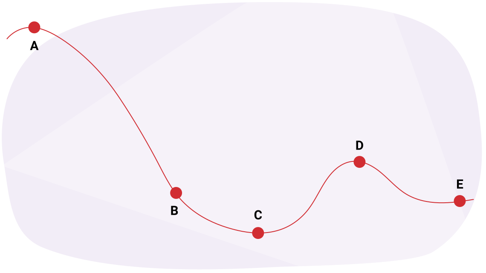

성찰하기
새로운 주제를 탐구하고 배울 때, 잠시 멈추고 학습을 성찰하는 것이 중요합니다. 이를 통해 기존 지식을 강화하고, 오해를 바로잡으며, 향후 학습을 준비할 수 있습니다.
이 학습 활동의 목적은 에너지에 대해 성찰하고, 단원 3의 마지막에 있는 단원 3 과제를 준비하는 것입니다.
노트
이것은 자기 평가로, 다음을 도와줄 것입니다:
- 자신의 학습을 평가하고 검토하기
- 학습의 현재 위치, 도달해야 할 목표, 그리고 최선의 방법을 결정하기
- 학습을 준비하고 보여주기
이 자기 평가에는 네 가지 과제가 있습니다. 노트를 사용하여 다음 각 문제를 완성할 수 있습니다.

과제 1: 에너지의 형태
다음 두 열에서 에너지의 형태와 예시를 일치시키고, 짝을 선택하세요. 첫 번째 열에서 하나의 항목을 선택하고 두 번째 열에서 다른 항목을 선택하세요.
과제 2: 일(work)
펜을 0.26 N의 수평력으로 수평한 책상 위에서 27 cm 밀었을 때, 얼마나 많은 일이 수행되는가?
과제 3: 놀이기구의 에너지

과제 4: 에너지 보존(conservation of energy)
70.0 kg의 다이버가 초기 속도 없이 12 m 높이의 다이빙대에서 뛰어내린다. 다이버가 물에 닿을 때의 속도는 얼마인가?

노트
성찰
답을 검토한 후, 다음의 성찰 질문에 대해 스스로 생각하고 노트에 답을 기록하세요.
1. 어떤 개념을 개선해야 하나요?
2. 어떤 개념을 잘 했나요?
3. 모든 개념을 이해하기 위한 다음 단계는 무엇인가요?
4. 지금까지의 학습 활동에서 학습자로서 한 일을 성찰해 보세요. 2-3문장으로 잘한 점을 설명하세요.
5. 독립적인 학습자로서의 강점은 무엇인가요? 집중하기 위해 무엇을 했나요? 도움을 위해 어떤 자료를 활용했나요?
6. 개선이 필요한 영역은 무엇인가요? 더 나은 학습자/학생이 되기 위해 어떤 조치를 취할 수 있나요?
자기 점검 퀴즈
이해도를 확인하세요!
다음의 자기 점검 퀴즈를 완성하여 학습의 현재 위치와 집중해야 할 영역을 파악하세요.
이 퀴즈는 피드백용으로만 사용되며, 성적에 포함되지 않습니다. 퀴즈 시도 횟수는 무제한입니다. 시간을 들여 최선을 다하고, 제공되는 피드백을 성찰하세요.
퀴즈를 눌러 이 도구에 접근하세요.